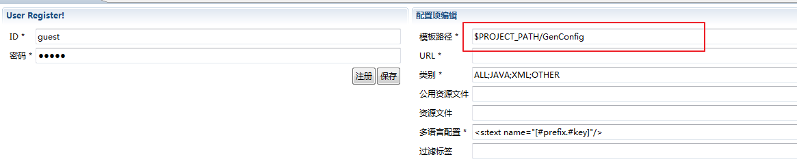
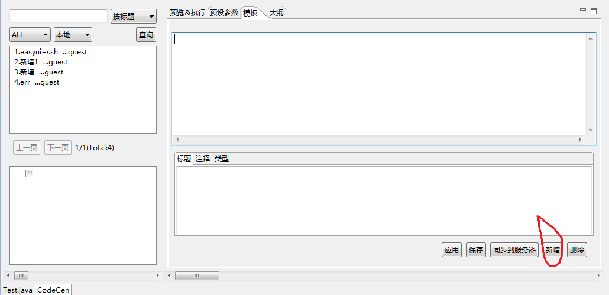

模板路径设置.
第一次使用该插件时会在项目路径下自动生成一个\GenConfig\GenInitConfig.xml,采用"Easy Code 配置"编辑器打开该文件,
模板路径默认设置在eclipse的安装路径下：
$ECLIPSE_INSTALL_PATH eclipse安装路径
$PROJECT_PATH 项目路径 建议路径选在项目目录下，这样可以用eclipse来编写修改模板。

怎样创建一个模板.
选中一个Java文件，【右键->打开方式->Easy Code】
点击新增，在弹出框填好内容后，保存到本地即可。
